Descriptive Statistics
Introduction to Descriptive Statistics
By the end of this training, you should know and understand:
The primary types of data
Measures of centrality, variability, and relationships between data
Types of plots and what data types they are useful for
This information is essential for what we will be doing for the rest of the semester, so make sure you understand it. These are the foundations that inferential statistics are built on.
For the examples here, I will use the following data that was collected from a previous class. The variable “phone_use” is the amount of time the person had spent on their phone before 10am in minutes, “top_app” is the app they had spent the most time on, and “time_awake” is the number of hours they were awake before 10am.
I will also use data on drug overdose deaths and some related variables by state from 2015 to 2022.
Descriptive Statistics vs Inferential Statistics
Descriptive statistics are methods of organizing, summarizing, and presenting data in a convenient and informative way
Descriptive statistics are very important because they make data palatable to understand
Imagine if your boss asked for information on the last year’s sales trends and you just gave him a list of numbers for sales every day of the year. They wouldn’t know what to think and would be mad!
Inferential statistics are methods used to draw conclusions or inferences about characteristics of populations based on sample data
Samples vs Populations
A population is the entire group of things or people that we want to study
We can almost never observe the entire population, so we draw a sample
We then use a model to describe the sample
By comparing that model to a null model (a model without specific trends or tendencies, a random model), we can infer something about the population
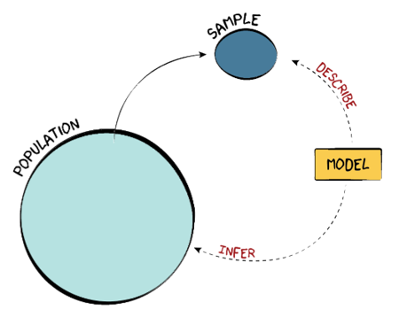
Types of Data
There are three main types of data:
Categorical/Nominal: these are data that are in unordered categories, like genre of music, state in the US, or color
Ordinal: these are data that are in ordered categories, meaning that one category is larger or better than another, like star rating on Amazon reviews, level of degree (High School, Bachelor’s, Master’s, etc.), or income level (low-, middle-, and high-income)
- One characteristic of ordinal data is that, while there is an order to the data, the jumps between levels are not necessarily fixed. For instance, the distance between “slightly agree” and “agree” is probably quite different from the distance between “agree” and “strongly agree”. Therefore, the levels are not meaningful and can’t be used in calculations.
Numeric/Quantitative: these data are represented by numbers and can be used in calculations, like gas mileage, age, or actual income
Some numeric data is discrete, meaning that no values fall between integers; for instance, you cannot have 1.5 people
Other numeric data is continuous, meaning you can measure any possible number, like 1.7253 gallons of gas
Practice
- Which kind of data is phone_use?
- What kind of data is “top_app”?
- What kind of data is “time_awake”?
Categorical Variables
Descriptive Statistics for Categorical Variables
The most basic descriptive statistic for a cateogrical variable is to count the number of observations in each category. This is called a frequency table.
Gmail Instagram Messenger Snapchat TikTok Twitter
1 1 3 2 2 3 With small numbers like these, it is easy to see what the numbers actually mean. However, if we had numbers in the thousands or millions, we may want to put the numbers in a format that is easier to understand and compare. If we put the numbers into percentages, this is called a relative frequency table.
Gmail Instagram Messenger Snapchat TikTok Twitter
0.08 0.08 0.25 0.17 0.17 0.25 Now we see that 25% of the respondents used Messenger the most and 25% used Twitter the most. - Given our sample size is so small, this may not be so useful. Snapchat has a much lower percentage than Messenger, but it only represents one person!
Visualizations for Categorical Data
The information in frequency tables—counts or relative frequencies of categorical data—is represented best using pie charts and bar charts.
Bar charts are better for ordinal data, since you can put bar charts in order but you can’t put pie charts in order
Sometimes, we might group the least common outcomes together in an “Other” category so we don’t have a bunch of small slivers or columns
3D pie charts are a bad idea; we are not very good at interpreting the area in circles anyways, and adding a dimension for no reason makes it harder to understand
Some people suggest that pie charts should NEVER be used; for a quick explanation of why, check out this site: https://www.data-to-viz.com/caveat/pie.html
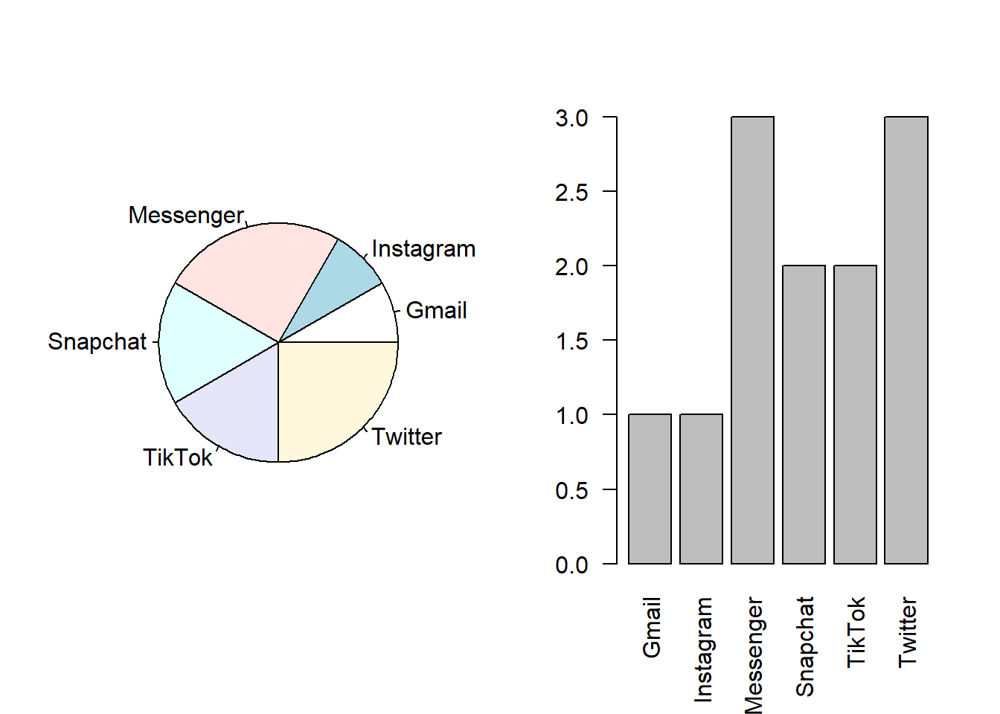
You can also do fun plots like a waffle chart. This is a waffle chart that shows the number of states in categories by the increase in the drug overdose death rate from 2015 to 2022. While we might want to show numeric data like this in a different form, the waffle chart shows us that many states have had big increases in overdose deaths!
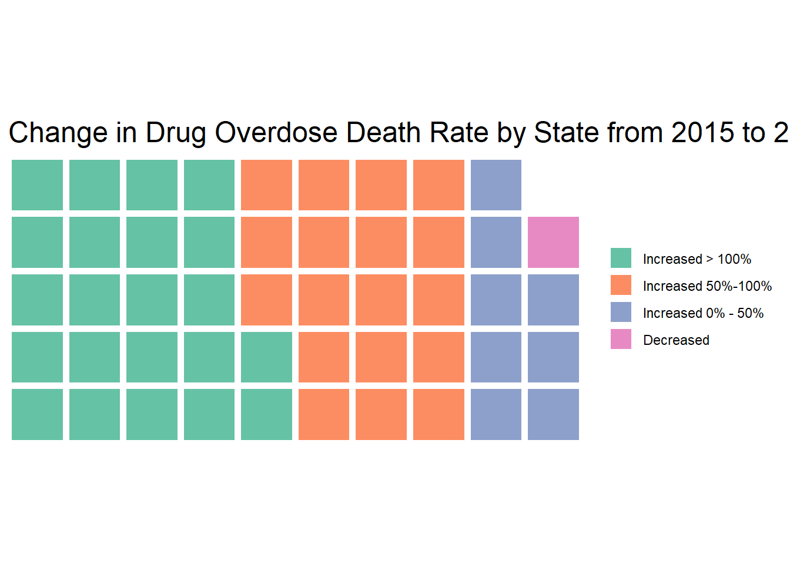
There are many ways to visualize data. You just need to figure out which one works best for you! This can take some creativity.
Numeric Data
Note
You probably have seen summation notation before, but it is worth it to review here since it is used in the coming formulas. Summation notation is used to indicate that we are summing a list of values. For example, we would interpret the following as “summing a function of \(i\) for all \(i\) values from \(k\) to \(n\).”
\[\sum_{i=k}^nf(i)=f(k)+f(k+1)+...+f(n-1)+f(n)\] Note that the \(i=k\) and \(n\) can appear above and below, as shown, or just to the right, like this: \(\sum_{i=k}^ni\) . An example may be easier to understand. Here is a summation calculated.
\[\sum_{i=4}^6\dfrac{i}{2}=\dfrac{4}{2} +\dfrac{5}{2}+\dfrac{6}{2}=\dfrac{7.5}{2}\]
Now you give it a try!
1) Evaluate the following: \[\sum_{i=2}^4i\]
2) Put the following in summation notation: \[\dfrac{1}{4}+\dfrac{1}{9}+\dfrac{1}{16}+\dfrac{1}{25}\]
\(\sum_{k=1}^{25}\dfrac{1}{i}\)
\(\sum_{k=2}^{5}\dfrac{1}{i^2}\)
\(\sum_{k=4}^{25}\dfrac{1}{i}\)
Measures of Centrality
Mean
Also called the expected value or average \[E(x) = \bar{x} = \dfrac{\sum_{i=1}^{n}x_i}{n}\] This formula tells us to add up all the values of x and divide that by the number of observations. The mean is useful because it is intuitive and can be used for all kinds of other calculations very easy. We’ll see some of these. The \(E()\) in that formula is the expectation operator. It tells us the value we should expect for x, which is the same as the mean. \(\bar{x}\) is called “bar x”, which is a way of denoting the mean of a sample.
As an example, here is the formula for the mean of the phone use time variable: \[E(x) = \dfrac{\sum_{i=1}^{n}x_i}{n} = \dfrac{40+14+61+16+14+112+76+68+70+17+70+35}{12}=49.42\]
Median
The middle value.
To get the median, put all the values in order and pick the one in the middle. If there are an even number of observations so there is no middle, take the average of the two middle values.
Here is the phone use data put in order from smallest to largest:
phone_use
1 14
2 14
3 16
4 17
5 35
6 40
7 61
8 68
9 70
10 70
11 76
12 112The middle two numbers are 40 and 61, so the median is the average of those two: 50.5. At the median, 50% of values lie above, and 50% of the values lie below.
Mode
The most common value
The mode is the value that appears the most times. The phone use data has two modes: 14 and 70, since both appear twice.
How do we know which measure to use? The mean value is often the most useful, and it’s one that people usually know or can intuit. However, the mean is sensitive to extreme values or skewed data. As an example, say there are 100 people in a room, and their mean income is $50,000. A man gets a call that he just inherited $100 million from a rich uncle. Suddenly, the mean income room is over $1,000,000! Most of the information in the room hasn’t changed, but it looks like everyone is a lot richer. On the other hand, if he was already in the top 50% of incomes, the median and mode would not have changed at all.
These figures show how mean, median, and mode differ in right-skewed instead of normal distributions. The mode stays at the highest point in the distribution. The median is higher than the mode, and the mean is the highest, since it is the most sensitive to higher values.
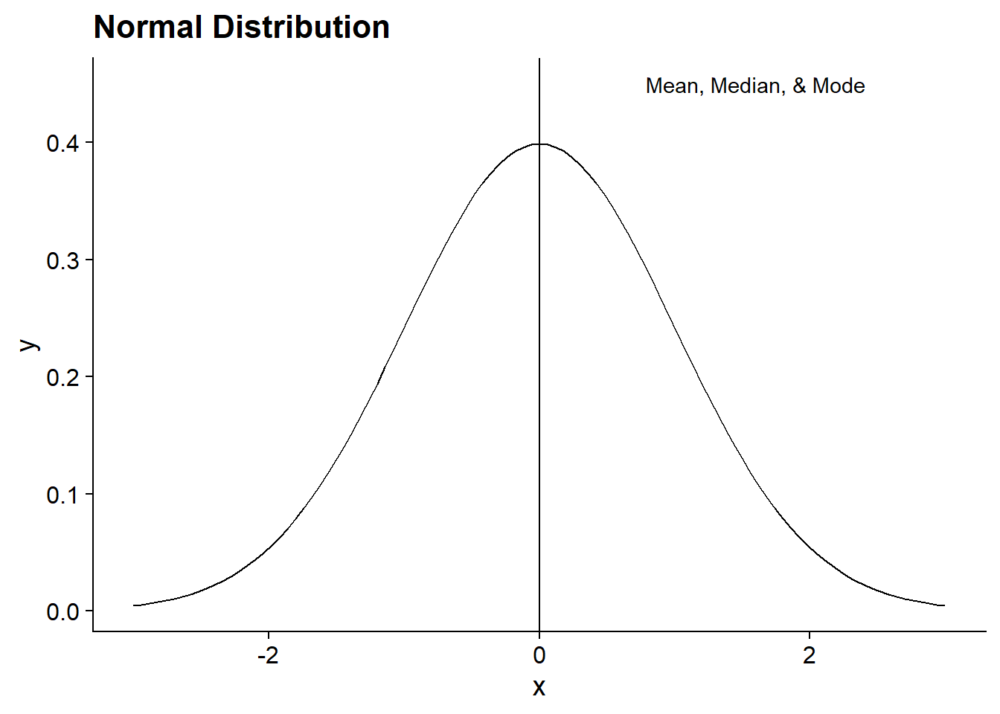
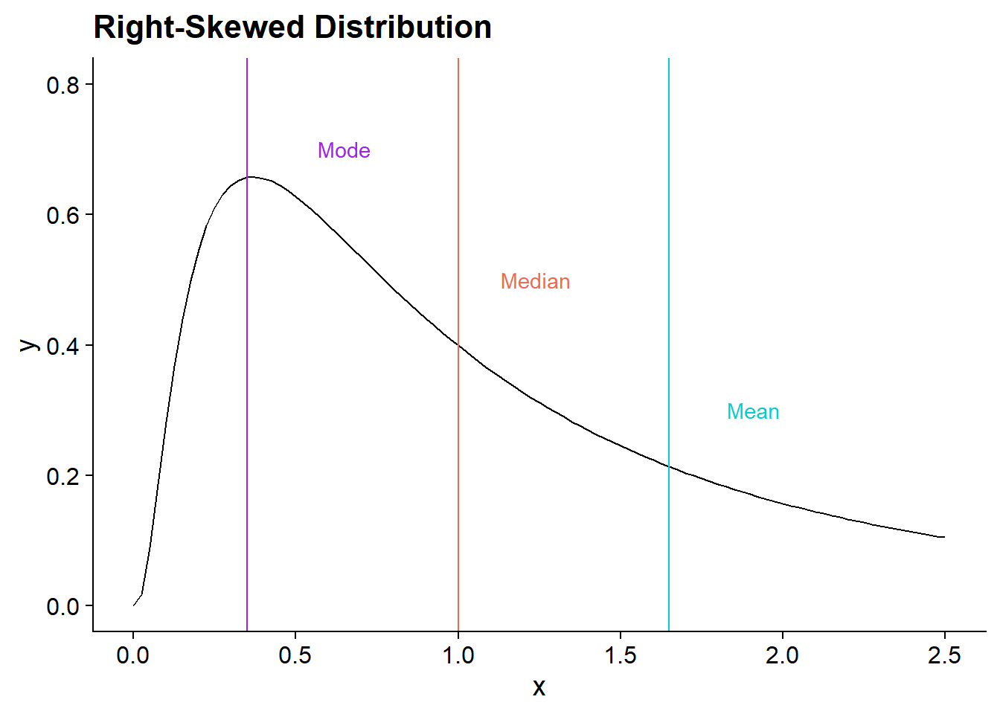
Each of these measures has their place - the main way to choose a value is to think about what your question is!
Practice
What is the mean, median, and mode of the following data? 3, 6, 15, 10, 2, 16, 9, 8, 6
Mean (round to one decimal place):
Median:
Mode:
Measures of Variability
We often want to know more about the data than just the center. For instance, if I tell you that the average income in a country is $30,000, does that tell you how well-off most people are?
Minimum and Maximum
These are the simplest measures of variability—the biggest and smallest values. They let us know what possible values our data can take. For instance, in our phone use data, we found the mean was 49.42. If I told you that my brother’s phone use was 115 minutes, would you know if that’s a lot or a little? Given our maximum value was 112, that seems like a lot!
Variance
The variance of a variable tells us how different the observations are from the mean. If all of the values are the same, then the variance is 0.
\[ s^2=\dfrac{\sum_{i=1}^{n}(x_i-\bar{x})^2}{n-1} \]
\((x_i-\bar{x})\) represents the deviations of each observed value of \(x\) — \(x_i\) — from the mean — \(\bar{x}\). We square all of the deviations, add them up, and divide by the number of observations minus 1.
Why do you think we square the deviations? Check the tip below for the answer.
Tip
If you added all the deviations without keeping the positives and negatives from balancing, then they would all add up to zero! You could instead take the absolute value of the deviations and add those, but there are some convenient features of squaring them instead.
Here’s the math to prove that they add to zero for you math nerds out there. \[\sum(x_i-\bar{x})=\sum(x_i-\sum\dfrac{x_i}{n})=\sum x_i -\sum\sum\dfrac{x_i}{n}=\sum x_i -n*\sum \dfrac{x_i}{n} = \sum x_i - \sum x_i\]
For populations, the standard deviation is denoted as \(\sigma^2\), while the sample standard deviation is \(s^2\).
Standard Deviation
Because the variance uses squared deviations, they don’t mean much on their own. To make variance mean something relative to the mean, we take the square root of the variance. \[s=\sqrt{s^2}\]
Empirical Rule
If data is normally distributed, there is a cool feature where 68% of the data is within 1 standard deviation of the mean, 95% is within 2 standard deviations, and 99.7% is within 3 standard deviations.
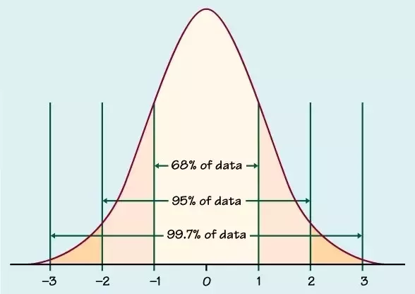
Practice
What are the variance and standard deviation of our phone use data? (Round to the nearest whole number.) See the tip below for help getting started.
Variance:
Standard Deviation:
Tip
The easiest way to calculate these by hand is to create a table with these columns: “\(x_i\)”, “\(x_i-\bar{x}\)”, “\((x_i-\bar{x})^2\). Then, calculate those values for each observation, and add up the last column to get the numerator for the variance.
Percentiles
The median is the value where 50% of observations fall above and 50% fall below. We could also find the value where a different percent falls below, for example 25% or 75%. These are different percentiles. To find the \(P\)th percentile, you find the location of the percentile with this formula:
\[ L_P=(n+1)*\dfrac{P}{100} \]
You then put the numbers in order from smallest to largest and find that location. If the location is not an integer (whole number), then round up so that at least \(P\) percent of values fall below.
Percentiles can be very useful. For example, the American Economic Association website reports: “For economists of all educational levels, the median earnings in 2021 were $105,630 with $62,460 at the tenth percentile and $193,690 at the 90th percentile.” This means that only 10% of economists make less than $62,460, and only 10% made above $193,690.
Example: Let’s say we have the following series of 13 ordered values.
0, 1, 3, 5, 6, 6, 7, 8, 8, 9, 10, 13, 15
If we wanted to find the 30th percentile, we would get the location using the formula: \(L_{30}=(13+1)*30/100=4.2\). We round up to 5, then find the 5th value in the ordered series: 6. At least 30 percent of the values fall below 6, so it is the 30th percentile.
Five Number Summary
The five number summary is a common tool to see where most of the data falls and the shape of a distribution. The five numbers are the minimum, 25th percentile, median, 75th percentile, and the maximum.
Interquartile Range
A quartile is one of the 25th, 50th, or 75th percentiles. These are called the first, second, and third quartiles, respectively. The interquartile range is the spread of the middle 50% of occupations, i.e. the third quartile minus the first quartile. \[IQR = Q_3-Q_1\]
Practice
What is the 5 number summary for our phone data?
phone_use
1 14
2 14
3 16
4 17
5 35
6 40
7 61
8 68
9 70
10 70
11 76
12 112Minimum:
25th percentile:
Median:
75th percentile:
Maximum:
Outliers
Suppose we have the following values:
1, 0, 3, 8, 4, 8, 9, 2, 35, 5
One of them stands out a lot, right? We call values that are very far away from the rest of the data outlier, and they can have a big effect on the data. They can represent mistakes in the data or exceptional observations.
What should we do with outliers? It depends on why they are there.
If they are mistakes or missing data, we can try to correct them or put in a guess value.
If they are real values that are extra large or small, we should think about what is more appropriate for our analysis.
- For example, if we are looking at individual incomes and there are some zeroes, they are likely unemployed, so we may want to restrict our analysis to employed people.
We could also try the analysis with and without outliers to see how big of an effect they have.
How do we know which observations are actually outliers? There are a few methods:
Plot the data in a histogram or scatterplot and visually pick them out
Rank the data in a spreadsheet and see if any values are really large or small
Use the empirical rule and flag anything that is more than 3 standard deviations out
Calculate “inner and outer fences”
Calculating inner and outer fences
The inner fence is the two values: \(Q1-1.5*IQR\) and \(Q3 + 1.5*IQR\) . The outer fence is the two values: \(Q1-3*IQR\) and \(Q3+3*IQR\) . If a value is between the two values of the inner fence, it is not an outlier. If a value is outside of the inner fence but inside the outer fence, it is a mild outlier. If a value is outside of the outer fence, it is an extreme outlier.
Example: Take the following series of data: 1, 3, 5, 6, 6, 8, 8, 9, 10, 10, 18
First, calculate \(Q1\) and \(Q3\), then the \(IQR\) . Since there are 11 values, the location of the 25th percentile is: \(L_{25}=(11+1)*\dfrac{25}{100}=3\) . The third value is \(Q1=5\). Similarly, the 75th percentile is at the 9th position: \(Q3=10\). The interquartile range is \(IQR=Q3-Q1=5\).
The inner fence is: \(Q1-1.5*IQR = 5-1.5*5=-2.5, Q3+1.5*IQR = 10+1.5*5=17.5\)
The outer fence is: \(Q1-3*IQR=5-3*5=-10, Q3+3*IQR=10+3*5=25\)
There are no values below the lower value in the inner fence, so there are no low outliers. The high value in the inner fence is 17.5, and there is one value above that—18---so it is a mild outlier. It is below 25, so there are no extreme outliers.
Are there any outliers in the phone use dataset?
There are not. \(Q_1\) is 16.75 and \(Q_3\) is 70, so the interquartile range is \(53.25\). The lower value for the inner fence is then \(16.75-1.5*53.25 = -63.125\) and the upper value is \(70+53.25*1.5=149.875\). There are no values outside of this range.
Graphs for Numeric Data
When we just have one variable, there are a few graphs we can use to see what the distribution of the data is. This tells us where the data tends to lie and visually shows us many things like the center and spread of the data. What are the possible values? And how often do they occur?
Histogram
A histogram shows us the spread, center, and shape of a distribution. The data are divided into equally sized bins, and the height of each bar is the frequency (number of observations) or relative frequency (percent of observations) within each bin.
To get the width of the bins, subtract the smallest observation from the largest observation and divide by the number of bins you want. \[Bin Width=\dfrac{Min-Max}{\# of Bins}\] How many bins should you have? It depends on the amount of data you have and how noisy it is. If you have an equal number of values and bins, it will probably look really lumpy and noisy.
As an example, here is a histogram of the overdose deaths data for 2021. This histogram has 30 bins, and it is very lumpy.
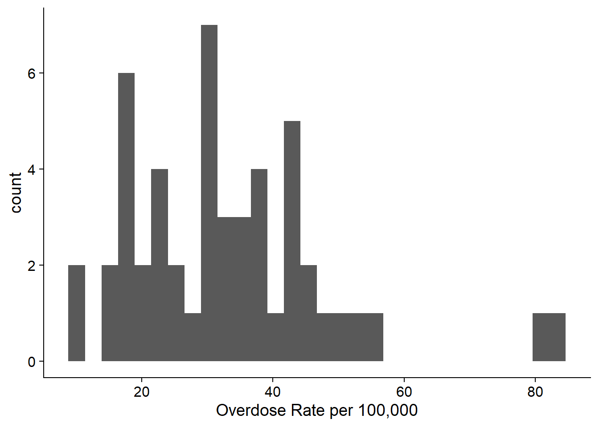
If we use fewer bins, it looks nicer and tells us more. This histogram has 12 bins, and it shows us that the data is right skewed with most of the values around 30. Very few observations are above 50.
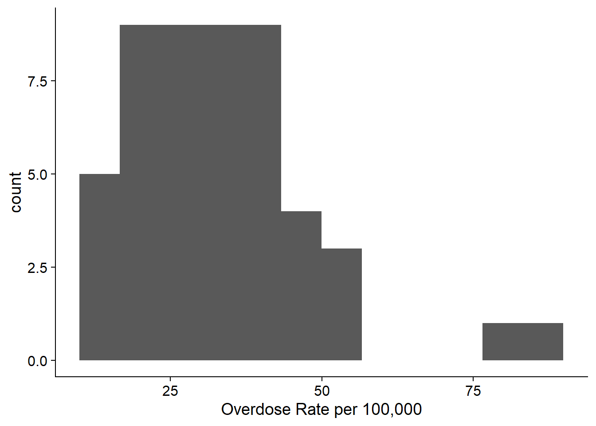
The shape of a histogram has many characteristics: symmetry, skewness, and modes.
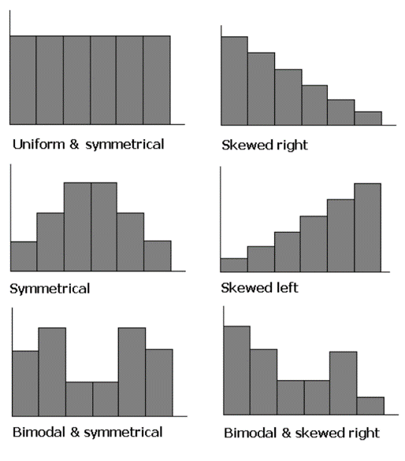
Density Plot
A density plot is similar to a histogram, but rather than using bins, it uses kernel smoothing to plot values and smooths out some noise. (This means that there is something like a weighted average across the values.) Density plots are not affected by bin size, which is great, but the problem is that we can’t do it by hand and the process isn’t always clear. Excel does not do density plots, but you can make them in R.
Here is the density plot of the same data as the histogram. It shows us basically the same information as the histogram.
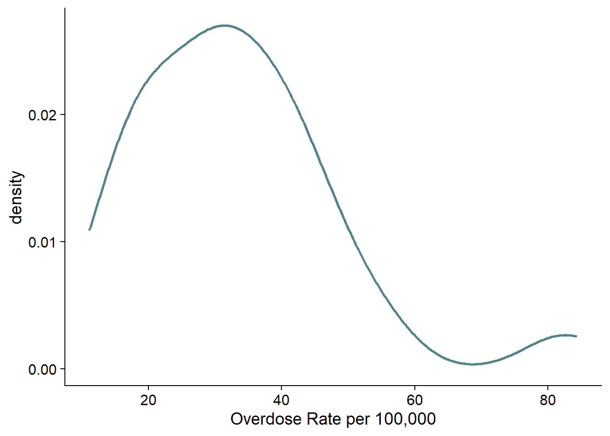
Box Plot
A box plot basically plots a 5-number summary. It is usually plotted on an axis or with numbers labeled. If there are outliers, usually they are not included in the boxplot. The max and min are the highest and lowest non-outlier values, and then outliers are marked with a dot.
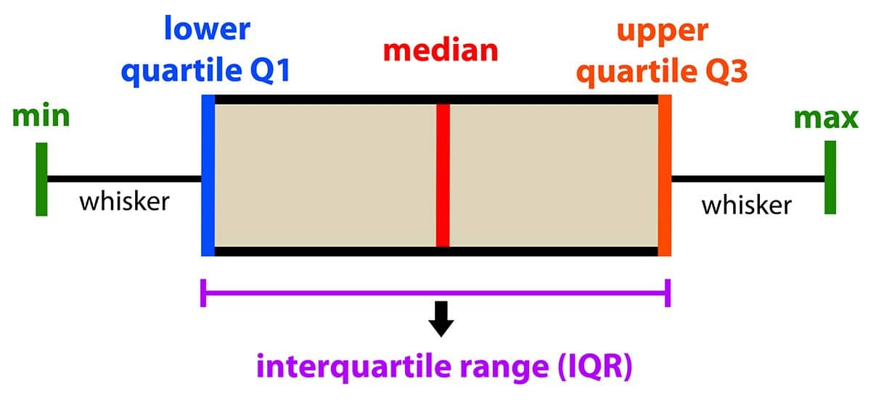
These are really helpful if we’re trying to compare distributions across groups. For example, this figure shows the distribution of drug overdose death rates by state for the years 2015 to 2021. We can see that the median has increased over time, but the distribution has stayed fairly normal (indicated by the box being in the middle of the whiskers, and the median line being in the middle of the box). There are outliers in every year.
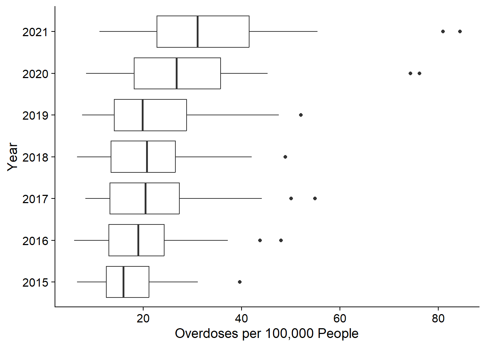
We will practice these visualizations using Excel and R in class.
Relationships Between Data
We often want to know how two variables are related and how strongly they are related. For example, in the phone use data, we might want to know how strongly time awake relates to the number of minutes on the phone (numeric and numeric), and we may want to know how time on the phone varies by top app used (numeric and categorical). For the drugs data, we might want to know how the poverty rate in a state relates to the drug overdose rate.
Two Categorical Variables
Analysis
If we have 2 categorical variables, we can do a cross-tabulation, which shows the frequency in each combination of categories. For example, maybe we survey 100 people in an airport on whether they are flying for business or pleasure and what cabin they’re in.
| Business | Pleasure | Total | |
|---|---|---|---|
| Economy | 23 | 40 | 63 |
| Comfort Plus | 15 | 10 | 25 |
| First Class | 6 | 6 | 12 |
| Total | 44 | 56 | 100 |
The bottom row shows the sum of the rows by column, and the right-most column shows the sum of the columns by row.
The probability of being a business traveler in economy is that cell divided by the total: \(23/100=23\%\).
Conditional probabilities are the probability that you are in one group given that another condition is true. So for example, if we want to calculate the probability that someone was in economy given that they were traveling for business, we divide the probability that they were in economy and business by the probability that they were in traveling for business. \[P(Economy|Business)=23/44=52.3\%\] \(52.3\%\) is less than the unconditional probability (\(63\%\)), so business travelers are less likely to fly economy than pleasure travelers.
Condtional probablities are formalized as such: \[P(A|B) = \dfrac{P(A\cap B)}{P(B)}\] Now you try: What is the probability that someone is flying for pleasure? % What is the probability that someone is flying for pleasure given they are in first class? %
Graphs
If you want to graph two categorical variables, you can use multiple bar charts or combined bar charts.
One Categorical and One Numeric
Conditional Mean
The most common thing we’ll do in this situation is calculate conditional means: what is the mean value within each category?
For example, we could get the average household income given race: \[E(income|black)=\$41,000\]
\[E(income|white)=\$70,000\]
Practice
What is the expected time spent on your phone if your top app is TikTok?
Two Numeric Variables
Scatterplots
Scatterplots show the relationship between two variables. If it applies, then the independent/explanatory variable goes on the x-axis, while the dependent/response variable goes on the y-axis. Do you think one variable has an effect on the other? That is the independent variable.
This plot shows the relationship between time awake and time on the phone.
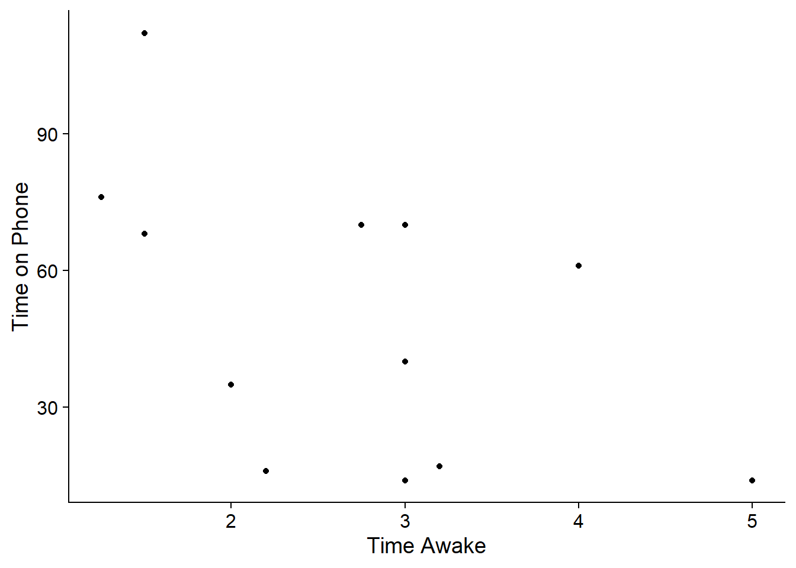
It looks like as time awake goes up, time on the phone generally gets lower. This is called a negative relationship.
Here’s another example of a scatterplot using the drug data for 2021.
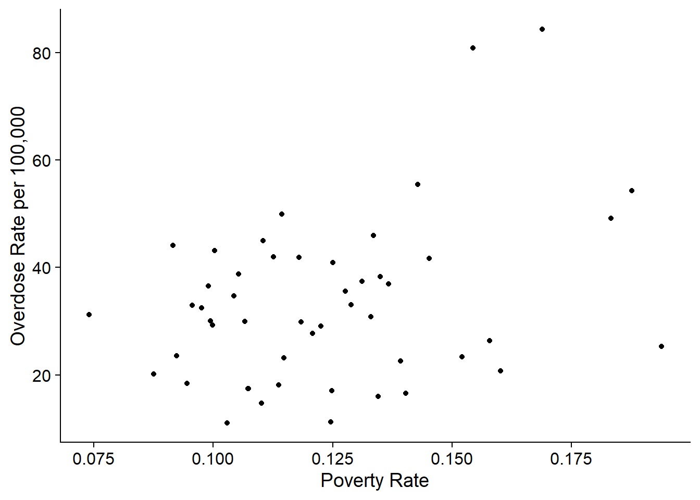
In this graph, as poverty rate goes up, the overdose rate seems to get higher as well. This is called a positive relationship.
Scatterplots can also show non-linear relationships, like U-shapes or curves, and they can show no relationship.
We may see a relationship, but the scatterplot won’t tell us how strong the relationship is. We can use other statistics to help us with that.
Covariance
The covariance shows us whether two variables are positively or negatively related. \[s_{xy}=\dfrac{\sum_{i=1}^n(x_i-\bar{x})(y_i-\bar{y})}{n-1}\] Think about this formula. If most of the time, when \(x_i\) is bigger than the mean, then \(y_i\) is bigger than the mean, then the terms in the summation will mostly be positive. If it’s the reverse—\(x_i\) is bigger than the mean when \(y_i\) is smaller and vice versa—then most of the terms being summed will be negative.
For example, the covariance for the poverty rate vs the overdose rate is -0.004.
The problem with the covariance is that we don’t know how strong the association is. We can standardize it to the magnitude of the variables.
Correlation Coefficient
The correlation coefficient standardizes the covariance using the size of the standard deviations of \(x\) and \(y\). \[r=\dfrac{s_{xy}}{s_xs_y}\] This value varies between \(-1\) and \(1\). If \(r=1\), then there is a perfect positive correlation, and if \(r=-1\), then there is a perfect negative correlation. If \(r=0\), there is no linear relationship.
For example the correlation coefficient for the poverty versus overdose rate is -0.011.
Coefficient of Determination
The correlation coefficient does a better job of telling us the size and direction of a relationship and is often used in summary statistics. However, the interpretation is not very neat. The coefficient of determination, on the other hand, is just the square of the correlation coefficient and has a very simple interpretation.
We often just call the coefficient of determination the “r-squared”, denoted \(R^2\) or \(r^2\), and it tells us what percent of the variation in \(y\) is explained by the variation in \(x\).
For example, if we have an \(r^2\) of \(0.653\), we would say that “65.3% of the variation in \(y\) is explained by the variation in \(x\).”
For the drug overdose rate versus poverty rate example, the \(R^2\) is 0.0001. This means that “0.01% of the variation in drug overdose rate can be explained by the variation in poverty.” Despite the scatterplot looking positive, there is really very little relationship between the two variables.
Practice
Calculate the covariance, correlation coefficient, and coefficient of determination for the phone use vs time awake variables. See the tip below for information on how to calculate them.
Covariance: (no decimal places) Correlation Coefficient: (two decimal places) Coefficient of determination: (two decimal places) Do phone use and time awake have a positive or negative relationship?
Tip
To calculate the covariance by hand, it is easiest to start with a table with these columns: “\(x\)”, “\(y\)”, “\((x_i-\bar{x})\)”, “\((y_i-\bar{y})\)”, “\((x_i-\bar{x})(y_i-\bar{y})\)”. Then, add up the final column to get the numerator of the covariance.
Time Series Data
One kind of plot that you have probably seen is a line plot. While there are applications for line plots that will be useful in this class, they are most useful for time series data–successive measurements of the same data source over time. For example, in finance, you often have daily data for the same stock over time.
The drug data has a time series component: the states are all measured from 2015 to 2022. Here is a line graph for the drug overdose rate over time in Washington:
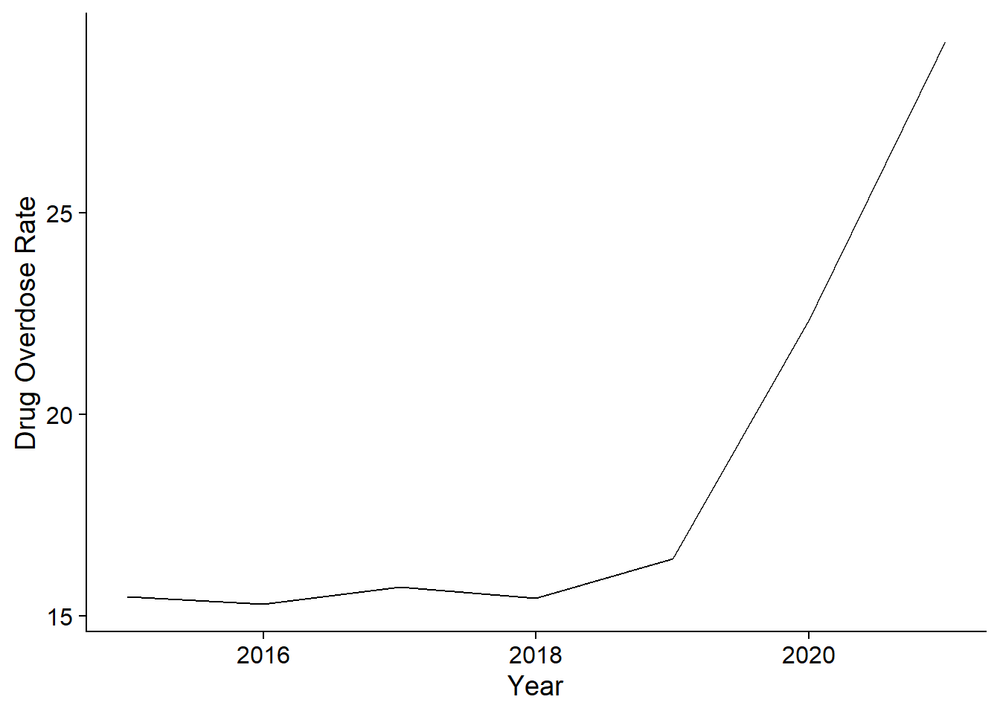
There are several problems with time series data that make them difficult to analyze using the tools in this class. I will talk about those problems during class. For your final project data, try to avoid using time series data. If you must, then make sure you have at least twice as many observations as you do time periods. For instance, 50 states over 7 years is fine, but 50 years with 7 states would not work.
Summary
There has been a lot of information in this walkthrough. This table gives you a directory for what statistics and visualizations to use when.
| Data/Analysis Type | Statistics | Visualizations |
|---|---|---|
| Categorical | Frequency table, relative frequency table | Bar chart, pie chart |
| Numeric | Mean, median, mode, standard deviation, variance, 5-number summary, percentiles | Histogram, box plot |
| Relationships | ||
| Categorical/Categorical | Conditional probability, cross tabulation | |
| Categorical/Numeric | Conditional mean | Multiple histograms or box plots |
| Numeric/Numeric | Covariance, correlation coefficient, coefficient of determination | Scatterplot |